Actual interface and renderer captures. Desktop captures use a 1440-pixel viewport; full-page heights change with the layout. Experience images are authored previews, not research outcomes.
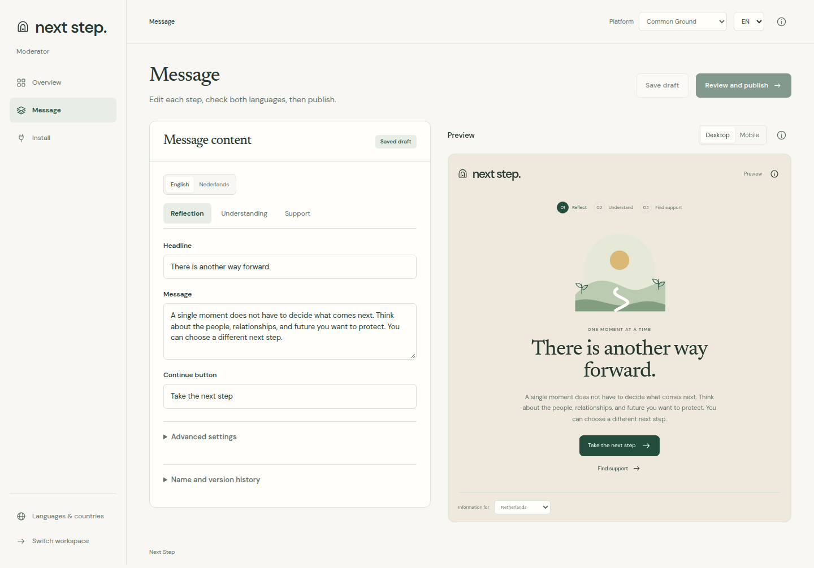
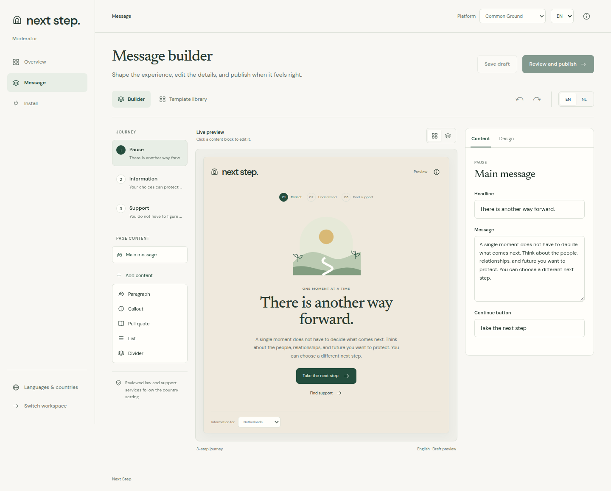
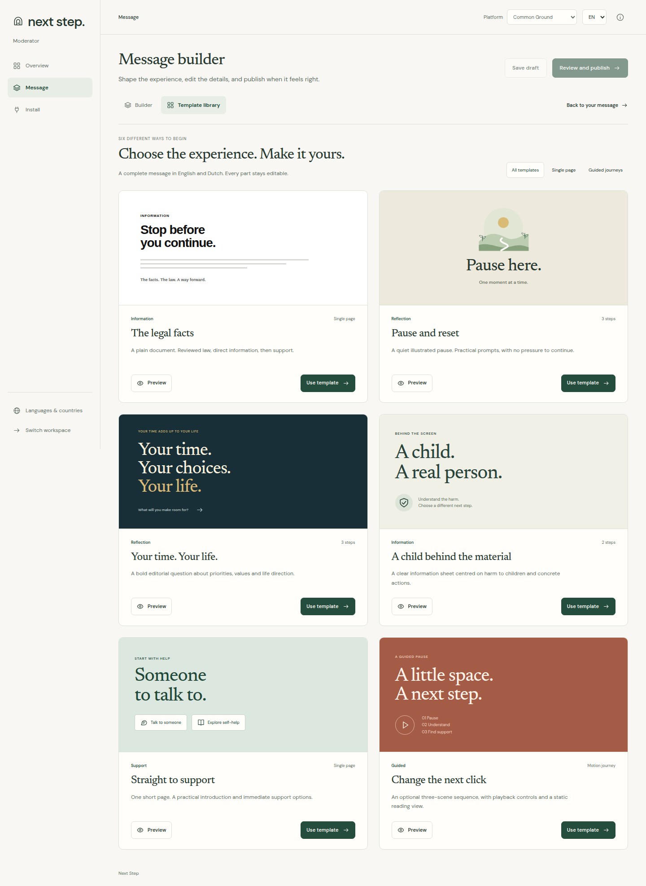
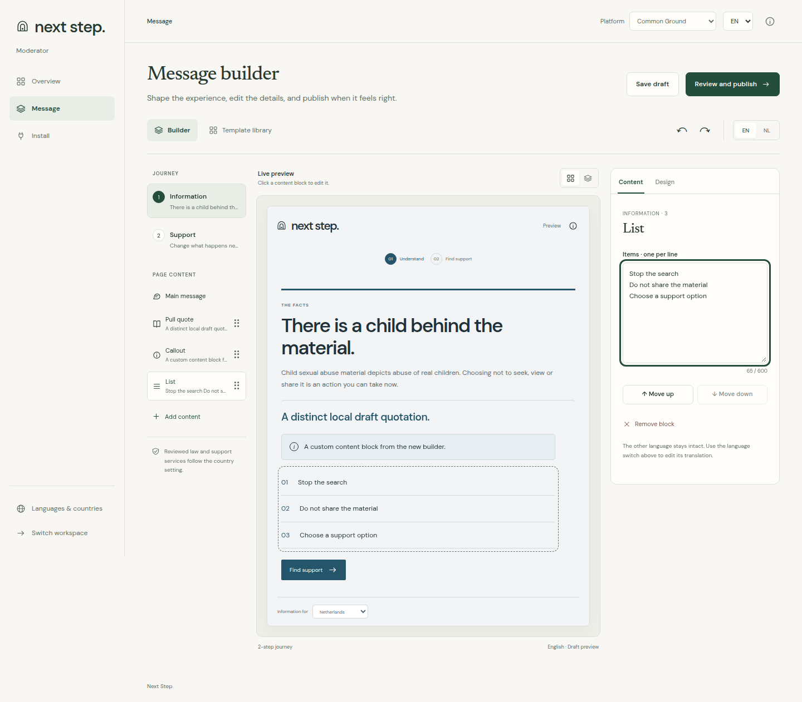
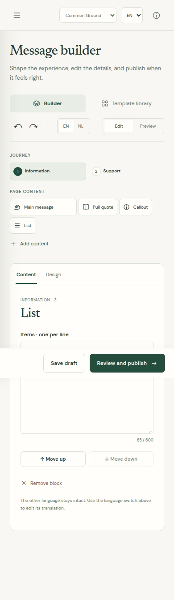
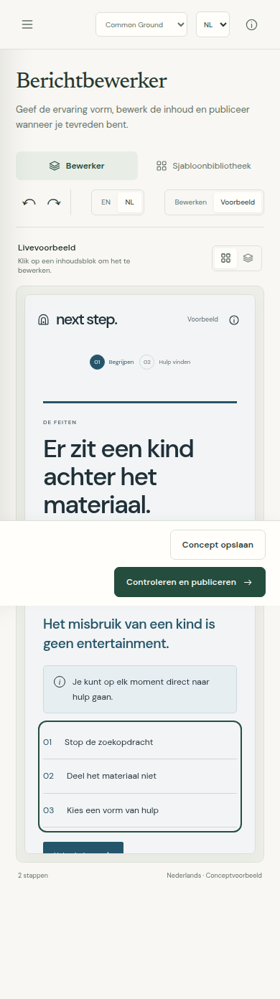
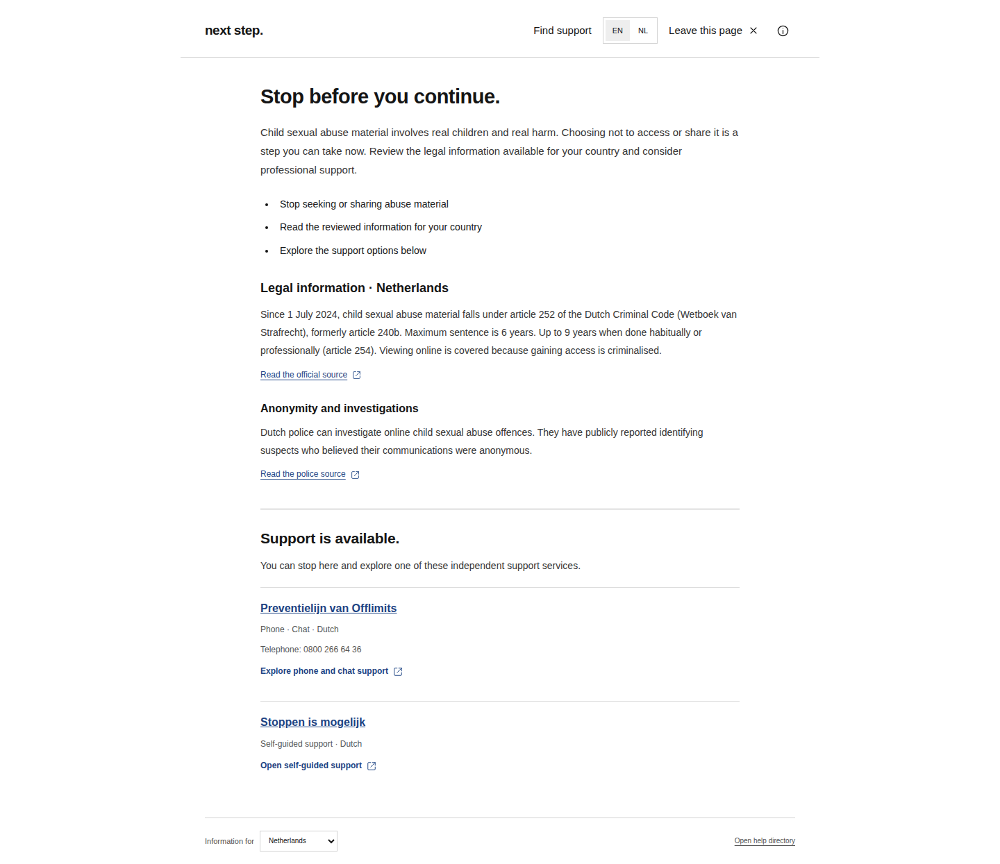
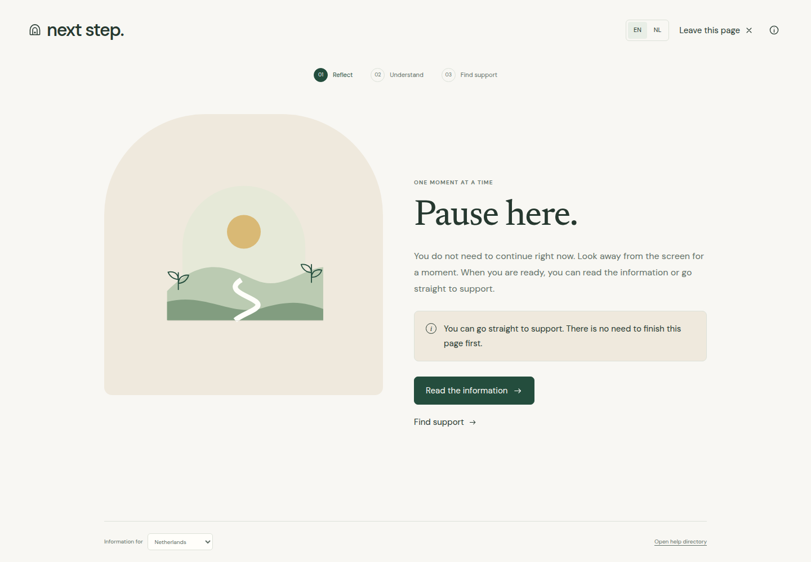
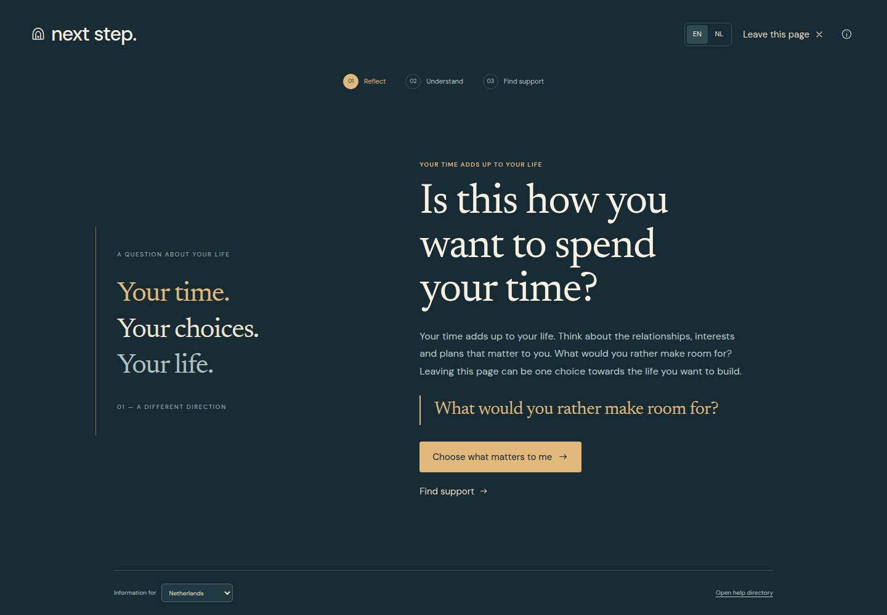
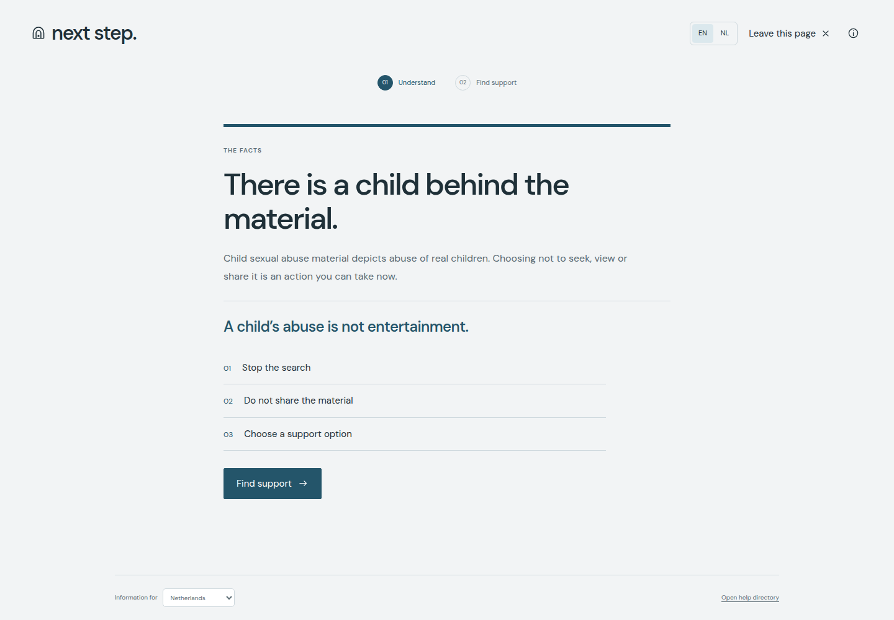
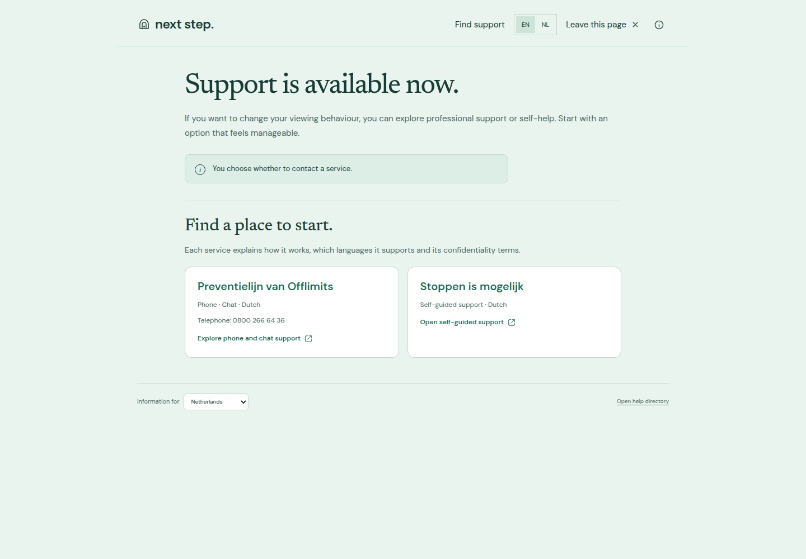
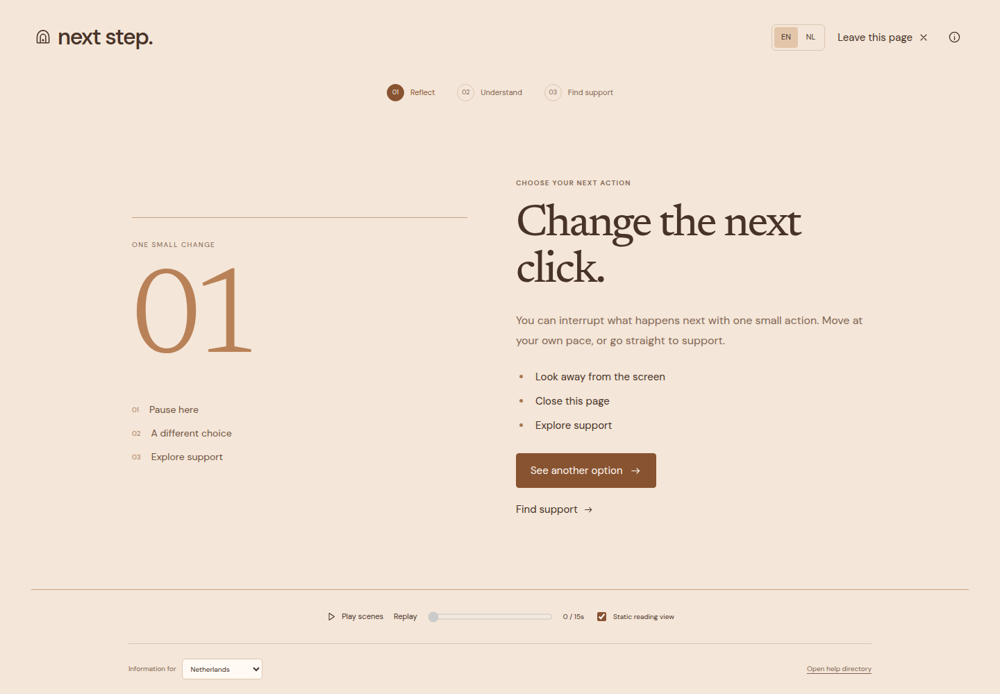